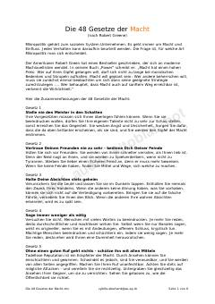

D4Hokimiyatga erishish va ta'sir o'tkazishning 48 ta strategik qonuni haqida qo'llanma.
Ushbu kitob Robert Grinning mashhur 'Hokimiyatning 48 qonuni' asarining qisqacha mazmunini o'z ichiga oladi. Unda hokimiyatga erishish, ta'sir o'tkazish va raqiblarni boshqarish bo'yicha strategik maslahatlar va mikrosiyosat usullari bayon etilgan.